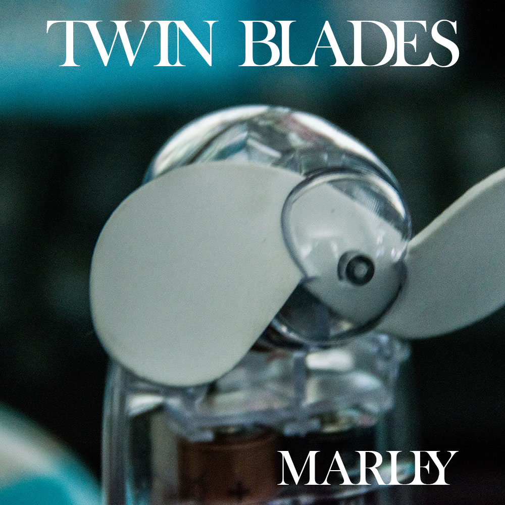

For many people, the art of the album cover is nigh as important as the art of music itself. When looking through my old photographs, I often see some which I feel would be right at home in my iTunes library, and here are a few that I have thrown together in Photoshop. The main purpose of this exercise is to gain a stronger appreciation of framing and arrangement, which I usually only consider before taking the shot.
| Twin Blades | |
|---|---|
|  | Not really sure what sort of songs would be on here, but I like the idea of some sort of Arctic Monkeys-esque stuff. Not much cropped out of this image, as it was already a close-up of an electric hand-fan. |
| The Cornwall Collection | |
| In case you're wondering, no this is not literally an album of sea-noise. Just folk music and shanties from the Cornwall area (don't actually know if such things exist). Original image was a lot larger, large amount of cliff cropped out. | |
| Back in Summer | |
| I'm not as big a fan of summer as some people, but it was irresistible to fuse Cheltenham scenery with a Beach Boys vibe. | |